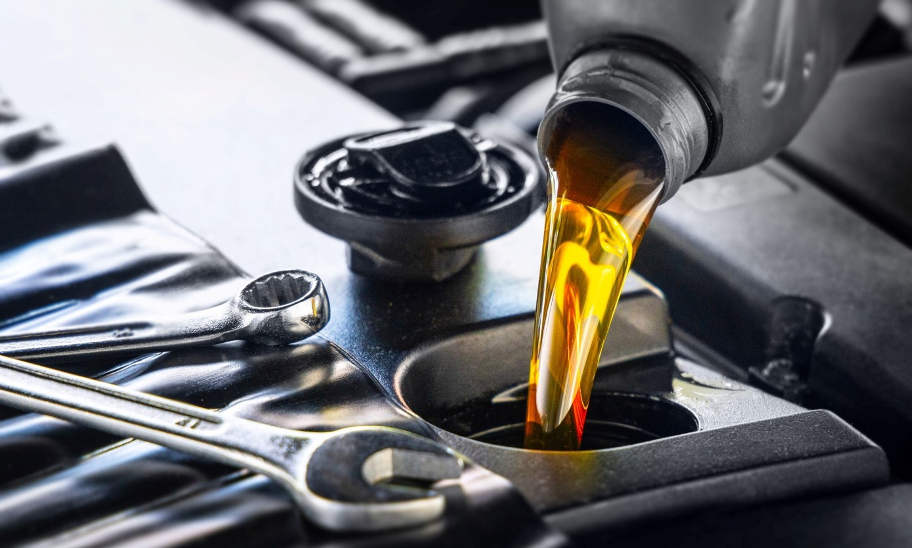
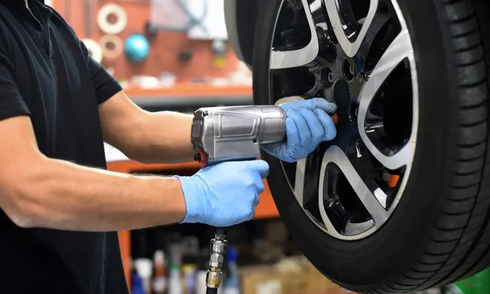
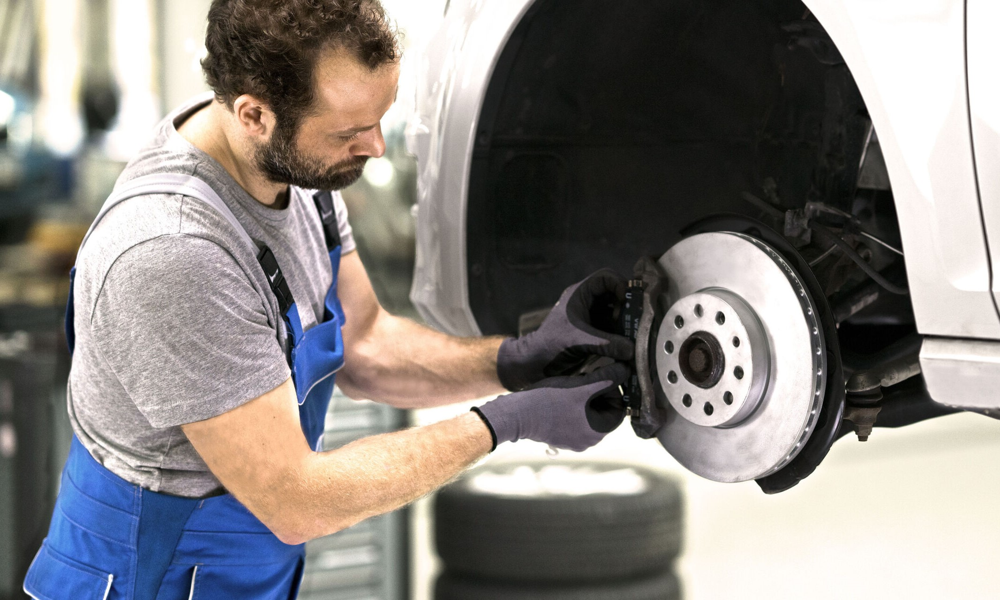
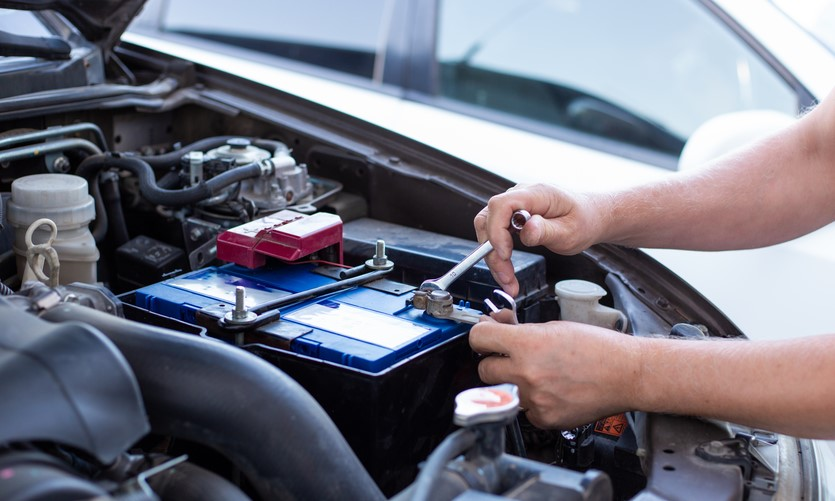

Quality Car Services
Trust us to keep your vehicle running smoothly
Book an appointmentOur Services
Oil Change
Our oil change service includes a comprehensive check of your vehicle's oil levels and a full oil and filter change to ensure your engine stays well lubricated and running smoothly.
Tire Rotation
Regular tire rotations can help extend the life of your tires and improve their performance. Our technicians will inspect your tires and rotate them as needed to ensure even wear and tear.
Brake Inspection
Your brakes are one of the most important components of your vehicle. Our brake inspection service will check your brake pads, rotors, and calipers to ensure they are in good working condition and provide you with a full report on the state of your brakes.
Battery Replacement
A dead battery can leave you stranded and without power. Our battery replacement service will quickly get you back on the road. Our technicians will test your battery, diagnose any problems, and replace it if necessary with a high-quality, reliable battery.
About Us
We are a family-owned business, dedicated to providing quality car services to our customers. Our team of experienced technicians uses only the best parts and equipment to ensure your vehicle is running smoothly. We believe in transparency and honesty, and always provide an accurate estimate before beginning any work.
Contact Us
Get in touch with us today to book an appointment or ask any questions. You can reach us by phone, email, or through the contact form below: